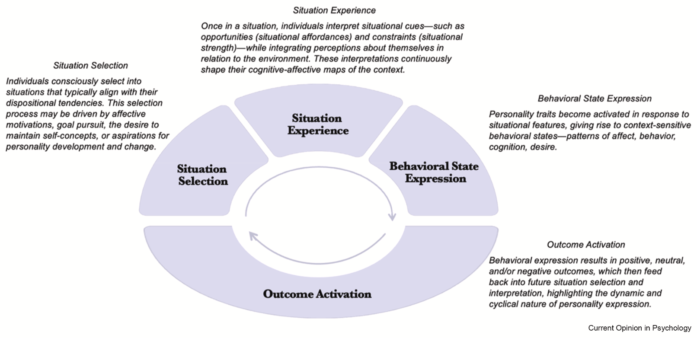
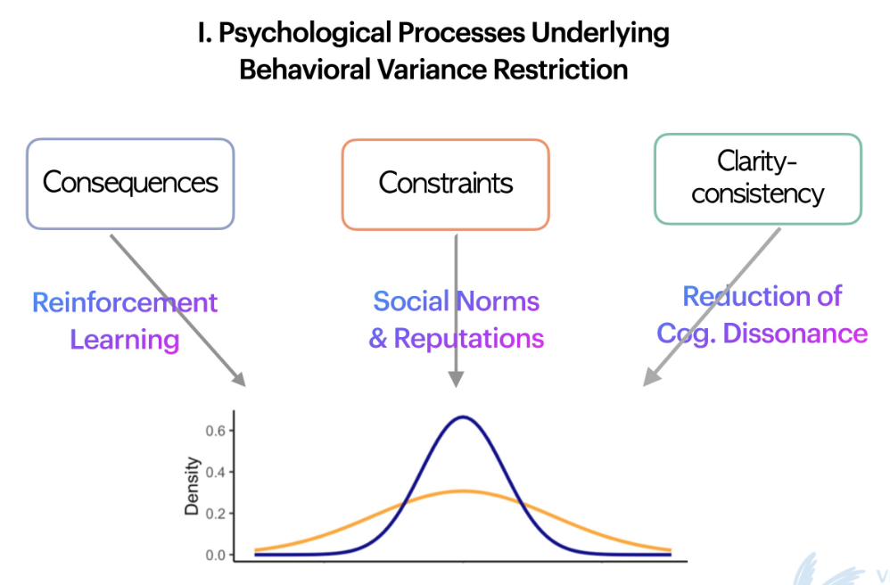
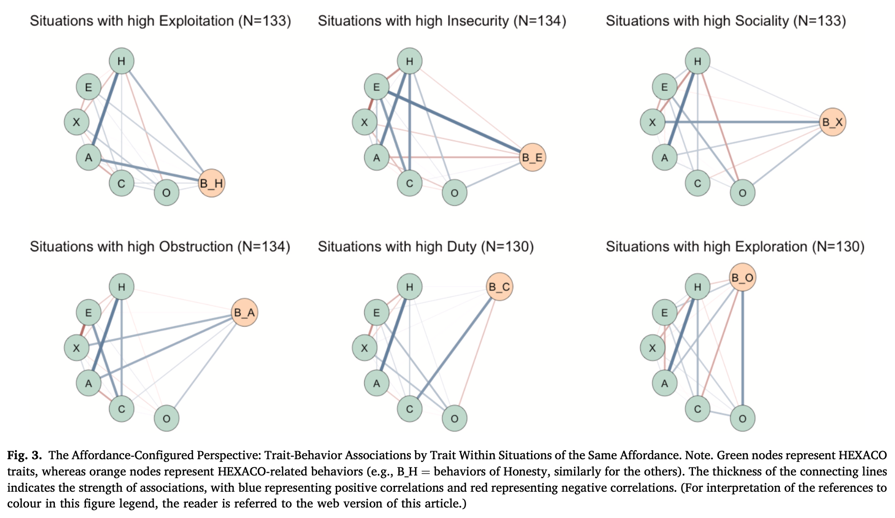
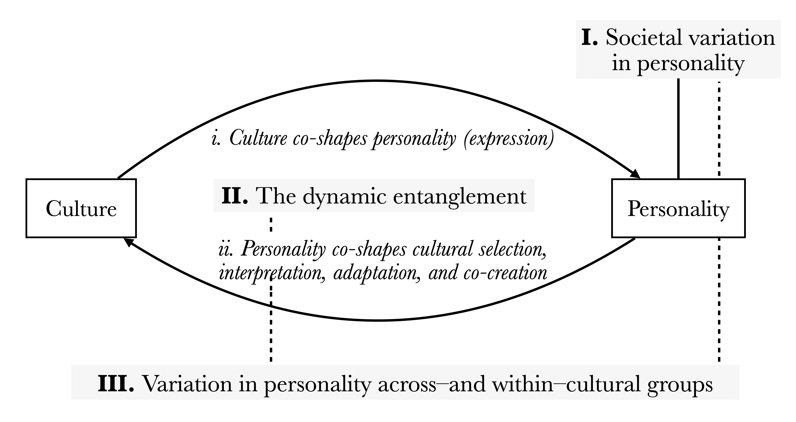
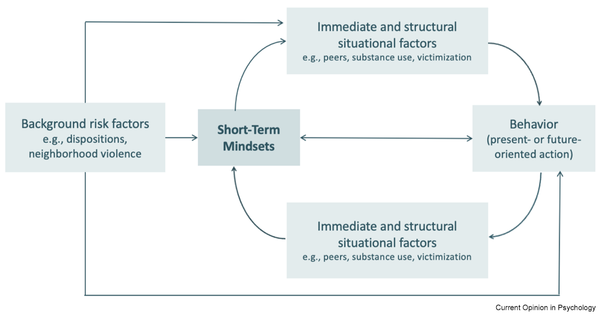
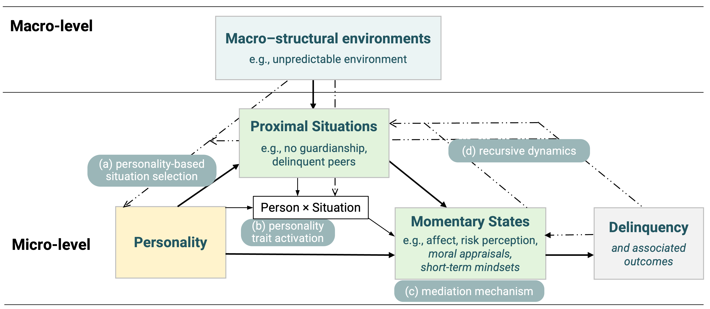

Person–Situation Processes
How personality and situations dynamically shape one another. Work includes how people select and perceive situations, how situational affordances activate personality traits, how situational strength regulates behavioral expression, and how these processes unfold recursively across (sociocultural) context.
A Person–situation transactions
Li, R., Van Gelder, J.-L., & De Vries, R. E. Who goes where and why? A meta-analytic review of personality-driven situation selection. Manuscript in preparation.
Li, R., & Wilt, J. A. (2025). Situated selves: A cyclical model of personality expression in context. Current Opinion in Psychology, 102104. https://doi.org/10.1016/j.copsyc.2025.102104

Li, R. (2022). Revisiting person–situation interactionism. Nature Reviews Psychology. https://doi.org/10.1038/s44159-022-00139-8
B Situational strength and trait activation
Li, R., Balliet, D., Thielmann, I., & De Vries, R. E. (2024). Revisiting situational strength: Do strong situations restrict variance in behaviors? Journal of Personality and Social Psychology. https://doi.org/10.1037/pspi0000475

Li, R., Thielmann, I., Balliet, D., & De Vries, R. E. (2025). Trait activation in daily life: Comparing two perspectives on person–situation interactions. Journal of Research in Personality. https://doi.org/10.1016/j.jrp.2025.104689

Li, R., Thielmann, I., Balliet, D., & De Vries, R. E. When dishonesty pays off: Incentives promote trait activation of Honesty–Humility. Revision submitted.
Li, R., Thielmann, I., Balliet, D., & De Vries, R. E. (2023). Development of the Generic Situational Strength Scale: Measuring situational strength across contexts. In The SAGE Handbook of Survey Development and Application. https://doi.org/10.4135/9781529617757.n35
C Context across levels
Li, R., & Zettler, I. (2025). Entangled minds: A roadmap for bridging cultural and personality psychology research. https://doi.org/10.1177/27000710251388772

Van Gelder, J.-L., Li, R., Wiechert, S., & Frankenhuis, W. E. (2025). Short-term mindsets: Beyond traits and self-regulation. Current Opinion in Psychology, 102112. https://doi.org/10.1016/j.copsyc.2025.102112

Li, R., De Vries, R. E., & Van Gelder, J.-L. (2026). Entangled pathways to delinquency: An integrative conceptual framework of personality, situations, and macro-structures. Zeitschrift für Psychologie. https://doi.org/10.1027/2151-2604/a000629
